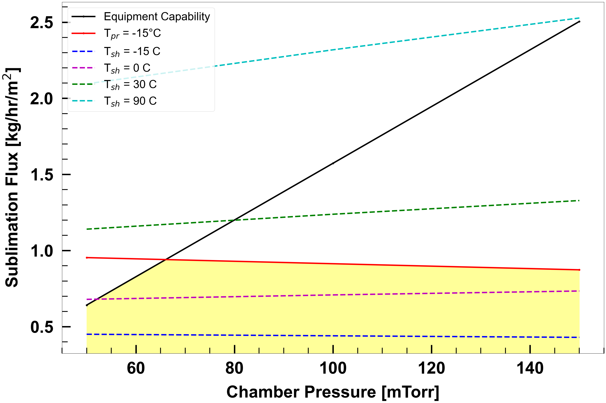
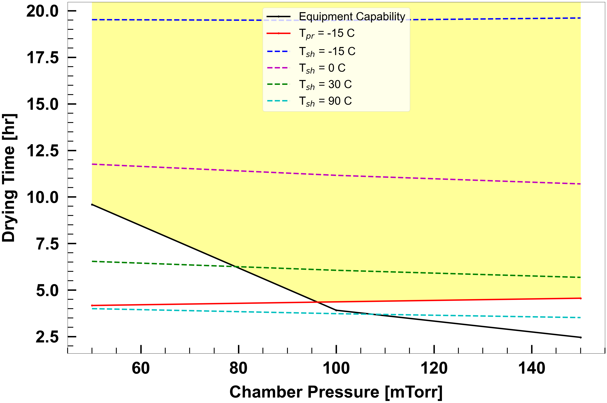
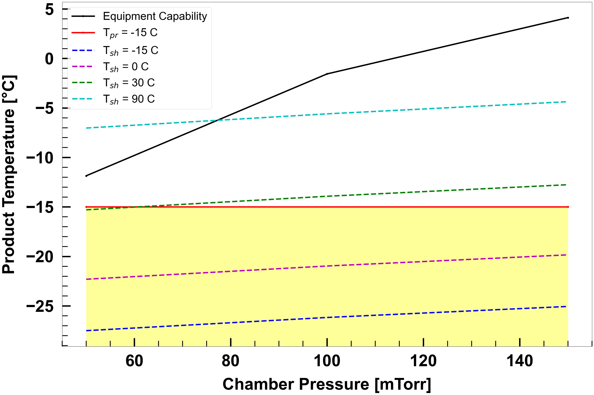

Construct design space with known Kv and Rp
We need a few imports:
from ruamel.yaml import YAML
yaml = YAML()
from lyopronto import design_space, generate_visualizations
# Set up the simulation settings
# This needs to be a dict with string keys, which can be expressed in YAML as well
sim = {
'tool':'Design Space Generator',
'Kv_known':'Y',
'Rp_known':'Y',
'Variable_Pch':'N',
'Variable_Tsh':'N'}
# Vial and fill properties
vial = {
# Av = Vial area in cm^2
'Av': 3.80,
# Ap = Product Area in cm^2
'Ap': 3.14,
# Vfill = Fill volume in mL
'Vfill': 2.0
}
# Product properties
product = {
# cSolid = Fractional concentration of solute in the frozen solution
'cSolid': 0.05,
# Product Resistance Parameters
'R0': 1.4, # cm^2-hr-Torr/g
'A1': 16.0, # cm-hr-Torr/g
'A2': 0.0, # 1/cm
# Critical product temperature
# At least 2 to 3 deg C below collapse or glass transition temperature
'T_pr_crit': -15 # in deg C
}
# Vial Heat Transfer Parameters
ht = {
'KC': 2.75e-4, # cal/s-cm^2-K
'KP': 8.93e-4, # cal/s-cm^2-K-Torr
'KD': 0.46 # 1/Torr
}
# Chamber Pressure
Pchamber = {
# setpt = Chamber pressure evaluation points in Torr
'setpt': [0.05, 0.1, 0.15],
}
Tshelf = {
# init = Intial shelf temperature in C
'init': -35.0,
# ramp_rate = Shelf temperature ramping rate in C/min
'ramp_rate': 1.0,
# setpt = Shelf temperature set points in C
'setpt': [-15, 0, 30, 90],
}
# Equipment capability (linear fit of sublimation rate vs chamber pressure)
eq_cap = {
'a': -0.182, # intercept [kg/hr]
'b': 11.7 # slope [kg/hr/Torr]
}
# Number of vials
nVial = 2000
# Time step
dt = 0.01 # hr
Now, we are ready to construct the design space, which is lyopronto.design_space.dry.
Info
Here is the docstring for design_space.dry:
Compute quantities necessary for constructing a graphical design space.
Parameters:
| Name | Type | Description | Default |
|---|---|---|---|
vial
|
dict
|
Vial properties, including 'Vfill', 'Ap', and 'Av'.. |
required |
product
|
dict
|
Product properties, including 'cSolid', 'T_pr_crit', and Rp parameters 'R0', 'A1', and 'A2'. |
required |
ht
|
dict
|
Heat transfer properties, including 'KC', 'KP', and 'KD'. |
required |
Pchamber
|
dict
|
Chamber pressure set points and time (see docs). |
required |
Tshelf
|
dict
|
Shelf temperature set points and time (see docs). |
required |
dt
|
float
|
Fixed time step for output [hours] |
required |
eq_cap
|
dict
|
Equipment capability line, with 'a' slope and 'b' intercept |
required |
nVial
|
int
|
Number of vials in the load, used for equipment capability calculation |
required |
Returns:
| Type | Description |
|---|---|
tuple[ndarray, ndarray, ndarray]
|
A tuple containing: - table of results for shelf isotherms - table of results for product isotherms - table of results for equipment capability curve |
The first two returns have 5 rows corresponding to
- Maximum product temperature [degC]
- Primary drying time [hr]
- Average sublimation flux [kg/hr/m^2]
- Maximum/minimum sublimation flux [kg/hr/m^2]
- Sublimation flux at the end of primary drying [kg/hr/m^2]
The third return has 3 rows corresponding to the first three of that list.
With nT setpoints in Tshelf['setpt'] and nP setpoints in Pchamber['setpt'], the returned arrays have the following shapes: - Shelf isotherms: (5, nT, nP) array - Product isotherms: (5, 2) array (for the lowest and highest Pchamber setpoints) - Equipment capability curve: (3, nP) array
Source code in lyopronto/design_space.py
25 26 27 28 29 30 31 32 33 34 35 36 37 38 39 40 41 42 43 44 45 46 47 48 49 50 51 52 53 54 55 56 57 58 59 60 61 62 63 64 65 66 67 68 69 70 71 72 73 74 75 76 77 78 79 80 81 82 83 84 85 86 87 88 89 90 91 92 93 94 95 96 97 98 99 100 101 102 103 104 105 106 107 108 109 110 111 112 113 114 115 116 117 118 119 120 121 122 123 124 125 126 127 128 129 130 131 132 133 134 135 136 137 138 139 140 141 142 143 144 145 146 147 148 149 150 151 152 153 154 155 156 157 158 159 160 161 162 163 164 165 166 167 168 169 170 171 172 173 174 175 176 177 178 179 180 181 182 183 184 185 186 187 188 189 190 191 192 193 194 195 196 197 198 199 200 201 202 203 204 205 206 207 208 209 210 211 212 213 214 215 216 217 218 219 220 221 222 223 224 225 226 227 228 229 230 231 232 233 234 235 236 237 238 239 240 241 242 243 244 245 246 247 248 249 250 251 252 253 254 255 256 257 258 259 260 261 262 263 264 265 266 267 268 269 270 271 272 273 274 275 276 277 278 279 280 281 282 283 | |
# Run the design space simulation
ds_shelf, ds_pr, ds_eq_cap = design_space.dry(vial, product, ht, Pchamber, Tshelf, dt, eq_cap, nVial)
# It's a good idea, particularly when you are exploring interactively, to write the simulation input and output to disk together so that as you do later analysis, you have a record of what you did. Uncommenting the following code will do so.
sim_setup = {
'sim': sim,
'vial': vial,
'product': product,
'ht': ht,
'Pchamber': Pchamber,
'Tshelf': Tshelf,
'eq_cap': eq_cap,
'nVial': nVial,
'dt': dt,
}
# # Write input data to disk as YAML
# import time
# current_time = time.strftime("%Y%m%d_%H%M%S")
# try:
# yamlfile = open('lyopronto_input_'+current_time+'.yaml', 'w')
# yaml.dump(sim_setup, yamlfile)
# finally:
# yamlfile.close()
plots = generate_visualizations((ds_shelf, ds_pr, ds_eq_cap), sim_setup, "", save_figures=False) # Don't save to disk here, but you should in general


